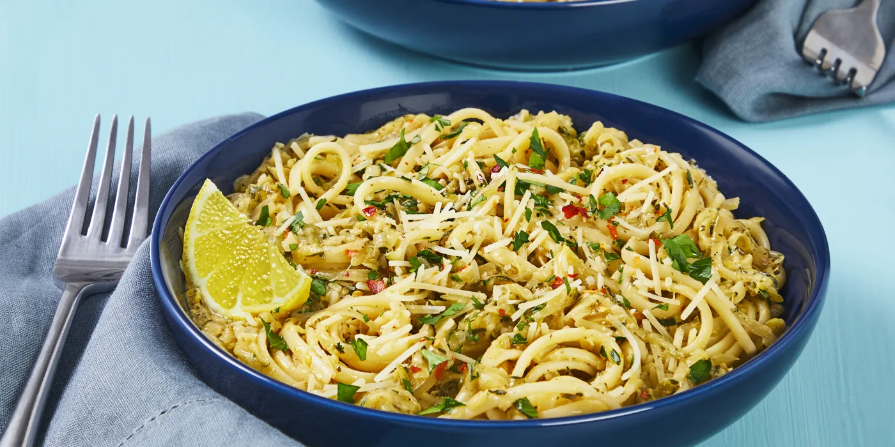

Caramelized Zucchini Linguine

Description
This pasta dish is as easy as it is delicious! Caramelized zucchini and linguine combine in lemony cream sauce for a sweet and
savory dish. Top it off with chili flakes and some extra squeezes of lemon juice!
Ingredients
- 1 zucchini
- 1 shallot
- 3 cloves garlic
- 1 lemon
- 1 small bunch parsley
- 8 oz linguine
- 2 tbsp cream cheese
- 1/2 cup vegetable stock
- 2 tbsp italian seasoning
- 1/2 cup parmesan
- salt and pepped
- oil of your choice
Directions
- Bring a large pot of salted water to a boil. Wash and dry produce. Trim zucchini; grate on the largest holes of a box
grater. Halve, peel, and thinly slice shallot. Peel and finely chop garlic. Zest and quarter lemon. Pick parsley leaves
from stems; finely chop leaves.
- Place zucchini in the center of a clean kitchen towel. Gather into a tight bundle and squeeze over the sink to remove
as much liquid as possible. (Alternatively, place zucchini in a fine-mesh sieve and press down with a spatula.)
- Heat a drizzle of oil in a large pan over medium heat. Add grated zucchini, shallot, garlic, and 1/2 tsp salt. Cook,
stirring occasionally, until zucchini is caramelized and mixture is jammy and thickened, 15-18 minutes. (If zucchini
begins to brown too quickly, add a splash or two of water.)
- Once water is boiling, add pasta to pot. Cook, stirring occasionally, until al dente, 9-11 minutes. Reserve a little
pasta water (about 1/4 cup), then drain.
- Add cream cheese, stock, italian Seasoning, a splash reserved pasta water, a big squeeze of lemon juice, and a
pinch of lemon zest to pan with zucchini mixture; whisk to combine. Bring to a simmer and cook, stirring, until smooth,
1-2 minutes. Turn off heat.
- Add drained pasta, half the parmesan, and half the parsley to pan. Season with salt and pepper. Stir in remaining lemon
zest if desired. If needed, add more reserved pasta cooking water a splash at a time until pasta is coated in a creamy
sauce. Divide between bowls; top with remaining parmesan and parsley. Sprinkle with chili flakes if desired. Serve with
remaining lemon wedges on the side.